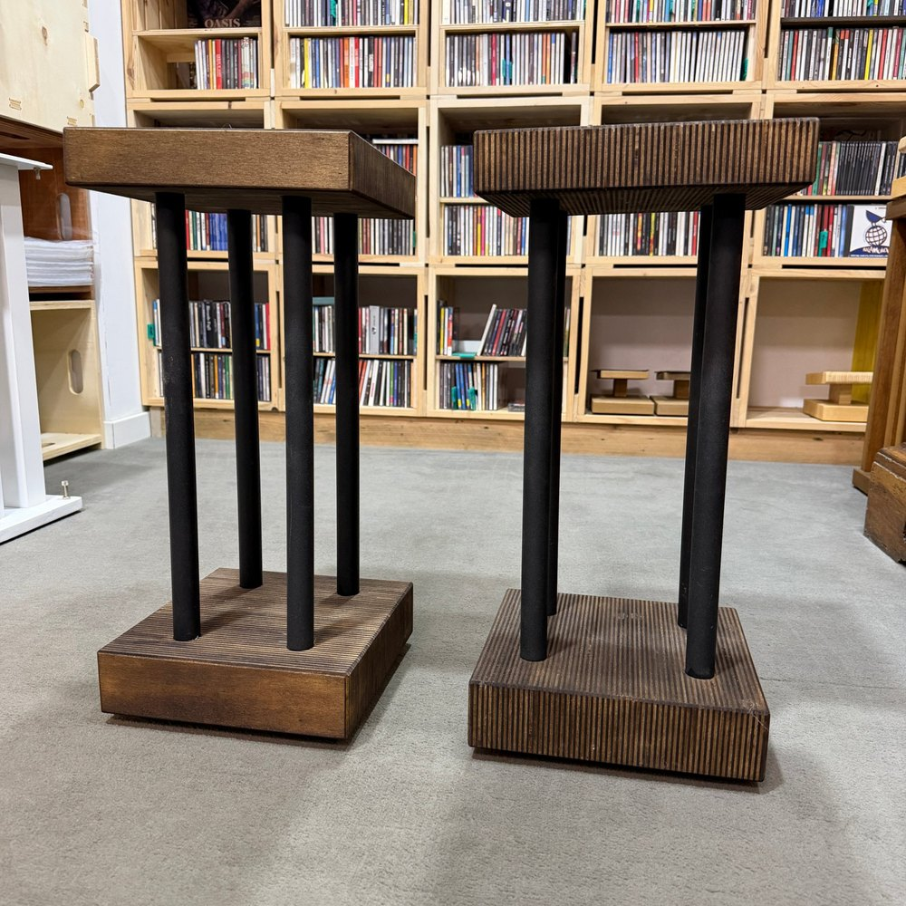
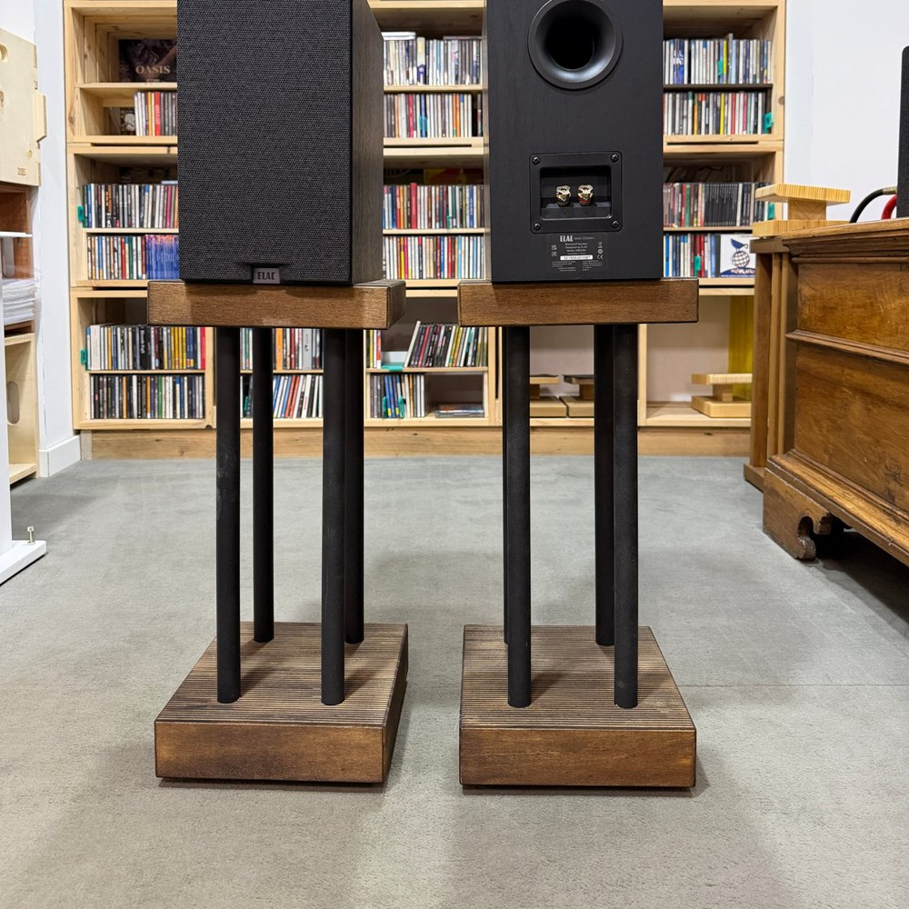
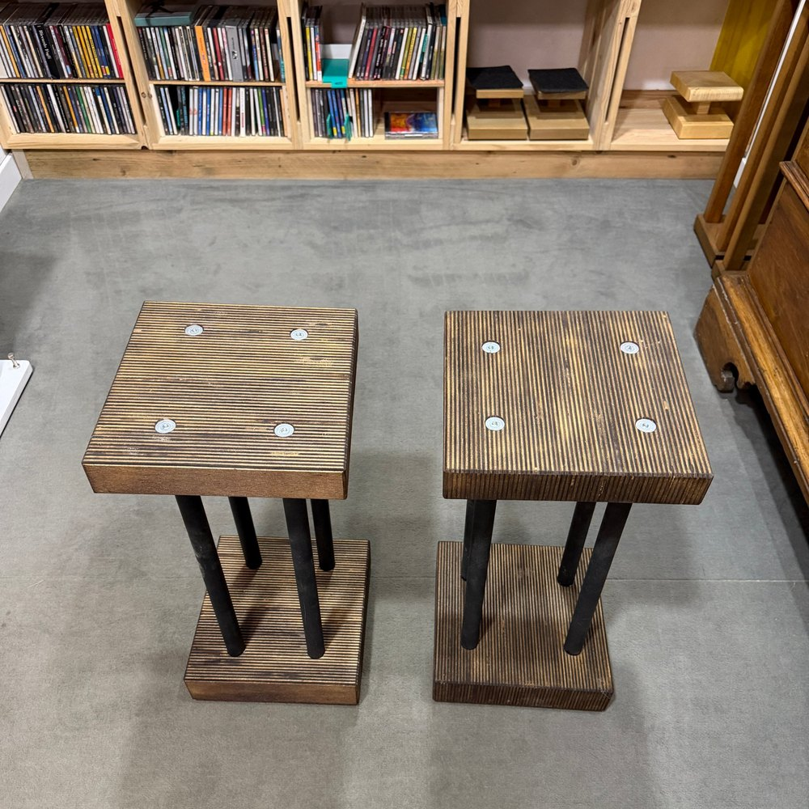

Extrasound Line Stand per diffusori fatti a mano in legno a righe e metallo
Un piano e una base in multistrato tinto, con le righe del legno a vista, uniti da quattro colonne in metallo nero. Alto 54 cm.
- Multistrato e metallo
- 54 cm di altezza
- Piano 24,5 × 25 cm
Prezzo su richiesta


Righe di legno, colonne di metallo.
Il piano e la base sono in multistrato tinto. Le righe che si vedono sono i fogli del multistrato lasciati a vista: chiari e scuri si alternano e danno al legno un disegno fitto e regolare.
Tra piano e base ci sono quattro colonne in metallo verniciato nero, una per angolo. Lo stand è leggero da guardare, quasi trasparente, e lascia la scena al diffusore.
Il piano misura 24,5 × 25 cm ed è anche tutto l'ingombro dello stand: accoglie anche diffusori da scaffale larghi. Con 54 cm di altezza, il tweeter arriva intorno ai 75-80 cm da terra, adatto a sedute un po' più basse del normale. Per la tua misura c'è il calcolatore.
Lo trovi nel nostro showroom di Cesena. Fabrizio lo costruisce anche nuovo, sulle misure dei tuoi apparecchi e della tua casa.
Diffusori che ci stanno, per esempio: ELAC Debut 3.0 DB53, Dynaudio Emit 10 e Polk Audio Monitor XT20. Sono solo esempi tra quelli che trovi su Extrasound: va bene qualsiasi diffusore da scaffale con un ingombro simile.
Domande frequenti.
Che altezza di seduta va bene?
Con 54 cm di altezza il Line porta il tweeter di un diffusore da scaffale intorno ai 75-80 cm da terra: va bene per sedute un po' più basse del normale. Per il tuo caso c'è il calcolatore dell'altezza.
Il mio diffusore ci sta?
Il piano misura 24,5 × 25 cm e accoglie la maggior parte dei diffusori da scaffale, anche larghi; va bene anche se il diffusore sporge di 2-3 cm. Qui sopra trovi qualche esempio.
Si può fare in altre misure?
Sì: posso cambiare l'altezza delle colonne, la misura del piano o la tinta del legno. Guarda come funziona il su misura.